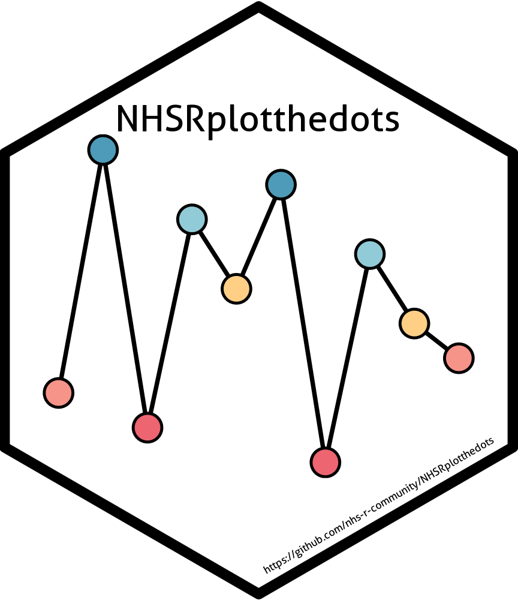
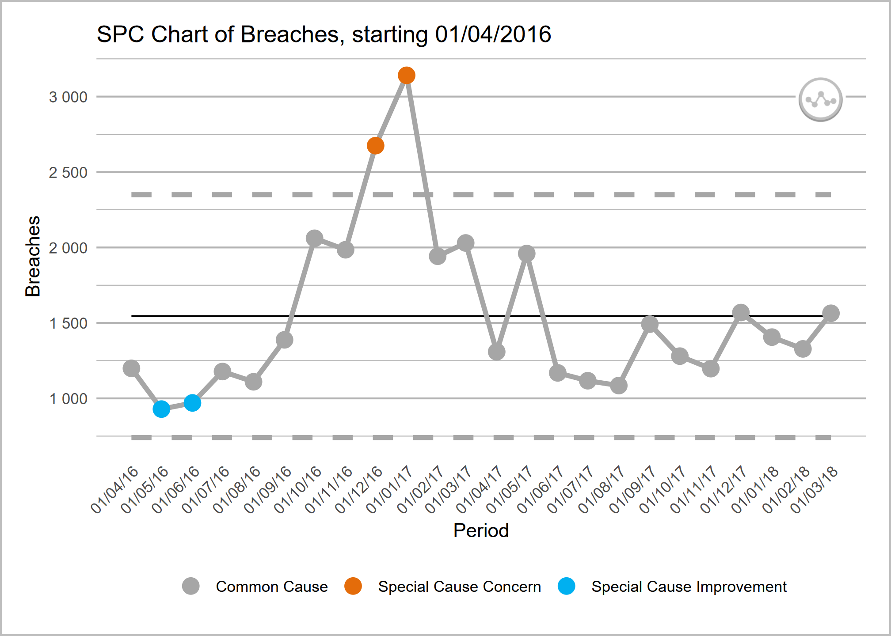
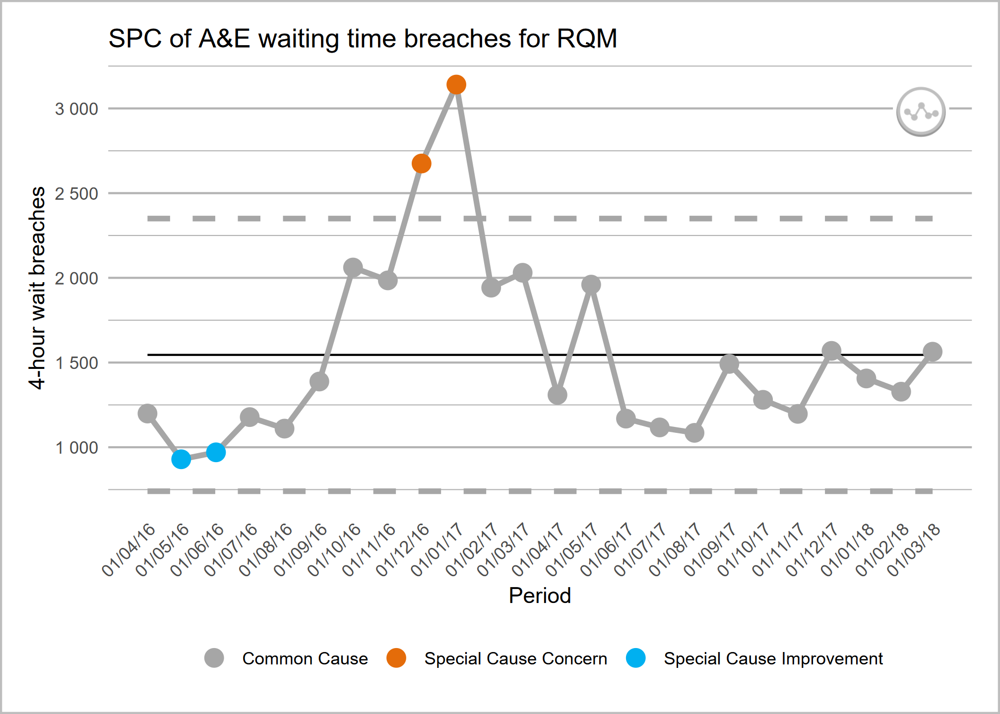
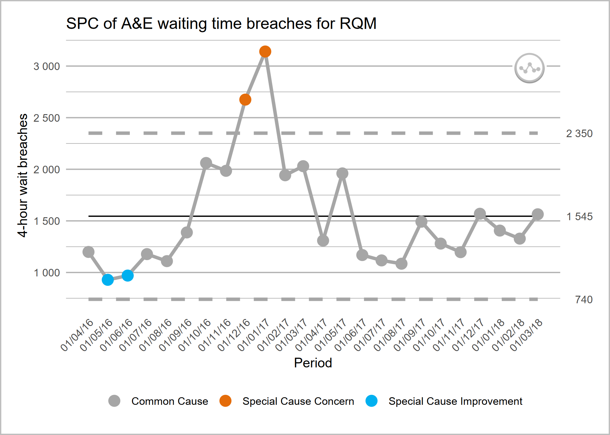

This package is built by the NHS-R community to provide tools for drawing statistical process control (SPC) charts. This package supports NHS England’s ‘Making Data Count’ programme, and allows users to draw XmR charts, use change points, and apply rules with summary indicators for when rules are breached.
Please be aware that this package is in the early stages of development, and features may change.
Tip!
If any charts that you are creating don’t have the variation flags in the top right and instead are a c this is possibly because you need the development version of NHSRplotthedots which is version v0.1.0.9000.
Reinstalling over a later version won’t work and you will first need to uninstall the package using code remove.packages("NHSRplotthedots").
Overview
Welcome to the NHS-R community’s package for building a specific type of statistical process control (SPC) chart, the XmR chart. We are aiming to support NHS England’s ‘Making Data Count’ programme. The programme encourages boards, managers, and analyst teams to present data in ways that show change over time and drive better understanding of indicators than ‘RAG’ (red, amber, green) rated board reports often present.
The help files and vignettes within this package tell you more about the possible options for controlling the charts, but below are some simple examples of the type of chart the package produces. We will use the ae_attendances dataset from the NHSRdatasets package and a bit of dplyr code to select some organisations.
library(NHSRplotthedots)
library(NHSRdatasets)
library(dplyr)
sub_set <- ae_attendances |>
filter(org_code == "RQM", type == 1, period < as.Date("2018-04-01"))
sub_set |>
ptd_spc(
value_field = breaches,
date_field = period,
improvement_direction = "decrease"
)
This plot is ok on its own, but we can specify more control options if we explicitly pass it on to the plot() function
sub_set |>
ptd_spc(
value_field = breaches,
date_field = period,
improvement_direction = "decrease"
) |>
plot(
y_axis_label = "4-hour wait breaches",
main_title = "SPC of A&E waiting time breaches for RQM"
)
or, equivalently:
sub_set |>
ptd_spc(
value_field = breaches,
date_field = period,
improvement_direction = "decrease"
) |>
ptd_create_ggplot(
y_axis_label = "4-hour wait breaches",
main_title = "SPC of A&E waiting time breaches for RQM"
)
You can also use the summary() function to get some basic statistics about your SPC data frame. The function prints the SPC options, and then returns the summarised results as a table:
summary_df <- sub_set |>
ptd_spc(
value_field = breaches,
date_field = period,
improvement_direction = "decrease",
target = 1200
) |>
summary()
#> Plot the Dots SPC options:
#> ================================
#> value_field: 'breaches'
#> date_field: 'period'
#> facet_field: not set
#> rebase: not set
#> fix_after_n_points: not set
#> improvement_direction:'decrease'
#> target: '1200'
#> trajectory: not set
#> screen_outliers: 'TRUE'
#> --------------------------------You could assign this summary table to a variable and use it later:
# base R -----------------
summary_df$variation_type
#> [1] "common_cause"
summary_df$assurance_type
#> [1] "inconsistent"
# tidyverse -----------------
summary_df |>
select(variation_type) |>
pull()
#> [1] "common_cause"
summary_df |>
select(assurance_type) |>
pull()
#> [1] "inconsistent"Interactive plots with Plotly
It’s also possible to generate interactive plots using the plotly package by replacing the call to plot with ptd_create_plotly(). This function takes the same arguments as plot/ptd_create_ggplot().
Adding annotations for mean and process limits
The package (in development and will be available from later releases) supports annotating the values of the mean and the upper and lower process limits on a secondary (right-hand side) y axis, if this is helpful for you and your audience.
The way to achieve this is to turn on the label_limits option:
sub_set |>
ptd_spc(
value_field = breaches,
date_field = period,
improvement_direction = "decrease"
) |>
ptd_create_ggplot(
y_axis_label = "4-hour wait breaches",
main_title = "SPC of A&E waiting time breaches for RQM",
label_limits = TRUE
)
If you have rebased the chart, the mean and process limit annotations will only show for the most recent section.
Getting help
To find out more about the ptd_spc() function, you can view the help with:
when the package is loaded. Otherwise type in the console:
Details on the extra plot controls can be found using:
To view the vignette (worked example), use:
Contributing
Please see our guidance on how to contribute.
This project is released with a Contributor Code of Conduct. By contributing to this project, you agree to abide by its terms.
The simplest way to contribute is to raise an issue detailing the feature or functionality you would like to see added, or any unexpected behaviour or bugs you have experienced.